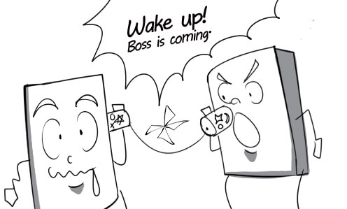
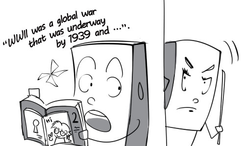
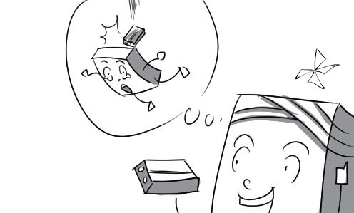
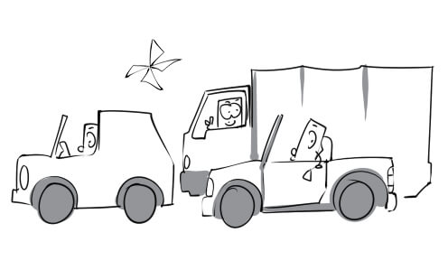
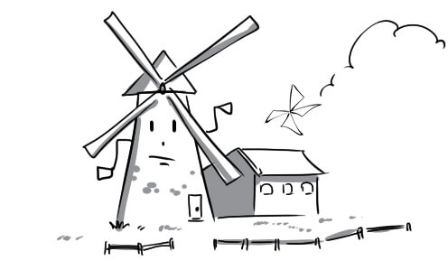

1.
accuracy: We need to achieve accuracy in communication to avoid any misunderstanding.
2.
communication: Right now I am in communication with my friend who lives in New York.

3.
conjecture: Conjectures about the new secretary are many and varied.

4.
dialect: I cannot understand what these people are talking about because they use dialect in their conversation.
5.
fluency: His fluency attracted a large audience.

6.
hesitation: David volunteered to answer the question while the others had hesitation.

7.
language: John can speak many foreign languages fluently.

8.
language barrier: Tuan cannot fully understand what the foreigner said because of the language barrier.

9.
linguistics: The professor of linguistics is lecturing on a new grammar structure.

10.
means: Mute people use gestures as a means of communication.

11.
mother tongue: Despite living in the UK, Francois still uses his mother tongue to talk to his parents.

12.
native speaker: You can learn English better if you have a chance to practice with native speakers.

13.
rhetoric: The salesman uses all his rhetoric to persuade me to buy this laptop.

14.
sign language: Andrew communicates with his deaf girlfriend in sign language.

15.
slang: Mrs Shelton cannot understand her son's teenage slang.
16.
viewpoint: From an economist's viewpoint, business is all about money.
17.
vocabulary: You can learn English vocabulary more effectively with flashcard blueup.
18.
bilingual: Our company's secretary is bilingual in English and French.

19.
incoherent: Peter delivered a very incoherent speech due to his nervousness.

20.
inherent: Being graceful is one of Vietnamese women's inherent characters.

21.
sophisticated: Arabic is one of the most sophisticated language systems in the world.

22.
spontaneous: Peter broke into spontaneous applause when his favorite appeared.
23.
clarify: The teacher uses funny illustrations to clarify his lecture.

24.
comprehend: I don't comprehend the meaning of this traffic sign.
25.
conclude: After conducting a chest X-ray test, the doctor concludes that Peter has a bone fracture.

26.
confess: The little boy confessed that he had broken the window.
27.
confirm: My doctor confirmed that drinking orange juice can help to prevent flu.

28.
contradict: The student's actions contradict his promises.

29.
converse: I really like to converse with Mary because she understands me very well.

30.
define: In my dictionary "chair" is defined as "a piece of furniture made of wood for one person to sit on".
31.
demonstrate: Andy is trying to demonstrate that he is not the one who broke the window.

32.
distinguish: We can distinguish between the two different airplanes thanks to their logos.
33.
emerge: Some individuals emerged as the best candidates in the contest.

34.
evolve: Spanish is one of several languages that evolved from Latin, which was the language of the Roman Empire.

35.
exaggerate: Don't fully believe his stories. He always exaggerates to make them more interesting.

36.
explain: The salesman is explaining how this laptop works to his customers.

37.
express: Finally, Andrew got enough courage up to express his feelings for Mary.

38.
flatter: Peter always flatters his girlfriend to make her happy.

39.
illustrate: The professor illustrates his lecture with many interesting examples.
40.
imply: What do you want to imply when you say that he eats like a pig?

41.
inform: John informs his colleague that the boss is coming.

42.
pretend: The boy hid his comic book and pretended to study when his mother entered his room.

43.
pronounce: The foreigner cannot pronounce Vietnamese names because they are unfamiliar to him.

44.
recall: The patient recalls being hit by a brick.

45.
refer: David always ignores my question whenever I refer to the money he owes me.
46.
refute: The speaker can easily refute his opponent's weak arguments.

47.
slander: Peter slanders me as the one who stole the money.
48.
state: The candidate stated his salary expectation very clearly.

49.
stutter: The man stutters a reply when his girlfriend asks him where he was yesterday.

50.
suggest: David suggests that they go to the movies tonight.
51.
translate: David is trying to translate this document into English.

52.
balance: Over-exploiting forest resources will harm the ecological balance of our country.
53.
biofuel: In Brazil, they ferment corn to produce ethanol fuel - the most common biofuel in the world.

54.
blackout: We light up some candles when the power blackout occurs.
55.
chemical: Chemicals explode because the chemist mishandles the experiment.

56.
carbon dioxide: Plants take in oxygen and release carbon dioxide at night.

57.
containment: Firefighters are fighting to achieve containment of the wildfire.

58.
crisis: A remarkable increase in oil price is a consequence of the energy crisis.

59.
electricity: Everybody shouted for joy when the electricity was back on.

60.
fossil fuel: Coal is one of the most common fossil fuels.

61.
generator: Thanks to the generator, we still have electricity when a power blackout occurs.

62.
hybrid: This hybrid consumes less energy and expels less exhaust fumes.

63.
oil rig: There are many oil rigs in Vung Tau.

64.
petrol: Peter stops by a petrol station to fill up his car.

65.
reserve: Farmers store rice straws as a combustible reserve throughout the winter.

66.
resource(s): Mother Nature offers mankind a great number of abundant natural resources.
67.
speculation: We are suffering from a gasoline shortage because of oil speculations.

68.
turbine: This turbine can convert energy from moving water into mechanical energy.
69.
vehicle: The number of vehicles in Ho Chi Minh city has increased rapidly.

70.
windmill: Windmills have become a famous symbol of the Netherlands.

71.
alternative: Wind power is the most promising alternative source of energy.
72.
critical: High gasoline prices land many taxi companies in critical condition.
73.
disposable: Disposable paper cups and plates are very convenient for outdoors parties.
74.
drastic: The company enforced drastic energy policy reforms in order to save energy.

75.
eco-friendly: These bags are eco-friendly because they are made from 100% recyclable materials.
76.
economical: Traveling by bicycle is one of the most economical ways of transportation.

77.
effective: Turning off the lights when you leave a room is an effective way to save energy.

78.
hydroelectric: Son La is the biggest hydroelectric power plant in Vietnam and Southeast Asia.

79.
nuclear: This nuclear power plant produces a great amount of electricity every year.
80.
rechargeable: Nowadays, all mobile phone batteries are rechargeable.

81.
renewable: Solar radiation is the biggest renewable resource of energy.

82.
solar: The solar system consists of the sun and many planets such as Earth, Mars, Venus…

83.
unleaded: Many countries switched to unleaded petrol because lead is extremely toxic.

84.
absorb: If you stay out in the sun for too long, UV radiation will be absorbed into your skin and cause skin cancer.

85.
combust: We combust a lot of wood to stay warm in the winter.

86.
conserve: The government is raising funds to conserve endangered forests.
87.
consume: My car consumes too much gasoline.

88.
convert: This wind turbine converts wind into electricity.

89.
counter: Many delegates countered the new energy policy suggested by the minister.

90.
deplete: This lake's fish stocks are severely depleted because too many people came here to fish.
91.
discharge: This factory discharges toxic liquid waste into the river.

92.
limit: This petrol station limits the amount of petrol a person can buy in a day.

93.
mitigate: Planting more trees and recycling waste will help mitigate environmental damage.

94.
outweigh: The forest's value as a carbon reservoir will far outweigh short-term economic gains from logging it.

95.
retain: The rangers put a lot of effort into retaining forest land and improving forest health.

96.
waste: You will waste a lot of water if you mindlessly let the tap run.